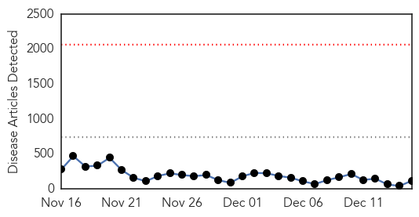
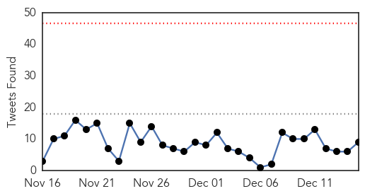
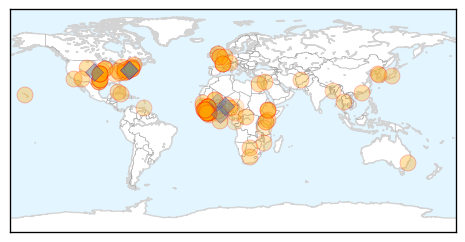
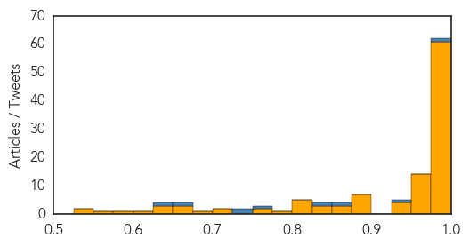

Mold/Fungal
30-Day Web Trend
0 alerts, 0 warnings
30-Day Twitter Trend
0 alerts, 0 warnings

Article Locations
Article Confidences

Top Articles:
Top Tweets:
-
No tweets found for Dec 15, 2014
Ebola
30-Day Web Trend
0 alerts, 0 warnings

30-Day Twitter Trend
0 alerts, 0 warnings

Article Locations
Article Confidences
Top Articles:
- 1.000
- PolitiFact's Lie of the Year for 2014: Distorted claims on Ebola virus
- 1.000
- Ebola: 'Top 10 Things You REALLY Need to Know'
- 1.000
- WHO Says Cases Of Ebola In Guinea , Sierra Leone Are In Still Large Numbers, But ‘Less Severe’
- 1.000
- Sir Bob Geldof on the fight against Ebola: Don’t listen to the cynics – we can change the world
- 1.000
- Ebola virus tricks the body and strips victims of dignity
- 1.000
- What's missing from Sierra Leone's Ebola response?
- 1.000
- UN urges debt relief for #Ebola-hit nations
- 0.999
- Endless Ebola Epidemic? That's The 'Risk We Face Now,' CDC Says
- 0.999
- Liberia Reschedules Senate Elections Due to Ebola
- 0.999
- Last Ebola patient has recovered, been released; 26 people being monitored for symptoms
- 0.999
- 2014 Lie of the Year: Exaggerations about Ebola
- 0.999
- Endless Ebola Epidemic? That's The 'Risk We Face Now,' CDC Says
- 0.999
- Ebola: An Eyewitness Account from Sierra Leone
- 0.998
- Endless Ebola Epidemic? That's The 'Risk We Face Now,' CDC Says
- 0.998
- Endless Ebola epidemic? That's the 'risk we face now,' CDC says
- 0.998
- Midstate soldier helping to control Ebola wanted 'to be part of something bigger than myself'
- 0.998
- Ebola: MSF handing over activites as outbreak is contained in Lofa county, Liberia
- 0.998
- Shock treatment: what's missing from Sierra Leone's Ebola response
- 0.998
- Justice Department Warns Against Ebola Discrimination
- 0.998
- Ebola: UN forum urges debt relief for hard-hit countries, as search for faster diagnostics gets underway
- 0.998
- Endless Ebola Epidemic? That's The 'Risk We Face Now,' CDC Says
- 0.998
- Endless Ebola Epidemic? That's The 'Risk We Face Now,' CDC Says
- 0.998
- Endless Ebola Epidemic? That's The 'Risk We Face Now,' CDC Says
- 0.998
- Endless Ebola Epidemic? That's The 'Risk We Face Now,' CDC Says
- 0.998
- Endless Ebola Epidemic? That's The 'Risk We Face Now,' CDC Says
- 0.998
- Endless Ebola Epidemic? That's The 'Risk We Face Now,' CDC Says
- 0.998
- Endless Ebola Epidemic? That's The 'Risk We Face Now,' CDC Says
- 0.998
- Endless Ebola Epidemic? That's The 'Risk We Face Now,' CDC Says
- 0.997
- what’s missing from Sierra Leone’s Ebola response
- 0.997
- Ebola outbreak: residents in Sierra Leone yet to change behaviour, UN says
- 0.997
- The great Ebola lie — Outbreak hyped for funding & media attention
- 0.997
- No Polite Way to Say it, We Were Lied to on Ebola
- 0.996
- Cuban doctor cured of Ebola to return to Sierra Leone
- 0.996
- Shock treatment: What's missing from Sierra Leone's Ebola response
- 0.995
- PolitiFact's lie of the year
- 0.995
- Region's hospitals: We're ready for disasters
- 0.994
- UI Hospitals would handle Ebola if it appears in Iowa
- 0.994
- World Vision Ghana Launches Ebola Project at Paga
- 0.994
- Medair launches emergency Ebola response in Sierra Leone - Sierra Leone
- 0.994
- Cuban Doctor Cured of Ebola to Return to Sierra Leone
- 0.993
- Texas disease taskforce draws lessons from Ebola
- 0.992
- What does the dry season mean for the Ebola response?
- 0.992
- iafrica.com Ebola in 2015
- 0.989
- Ethiopia volunteers to fight Ebola
- 0.989
- Koinadugu District vows to eradicate Ebola within 45 days
- 0.987
- A scarce drug and an ethics debate
- 0.985
- Fifty Dutch laboratory technicians to go to Ebola region - Sierra Leone
- 0.981
- Health authorities report 1 confirmed Ebola case in Liberia, previously declared Ebola free
- 0.980
- Protester calls for Christmas tree, tobacco boycott
- 0.980
- Stolen Ambulance Ends In Fatal Crash
Showing top 50 articles...
Top Tweets:
- 0.984
- Ebola Update: 18,188 confirmed, probable, and suspected cases of Ebola in 3 most affected countries. 6,583 reported deaths. EbolaResponse
- 0.955
- RT: EBOLA VIRUS DISEASE - WEST AFRICA (226): LIBERIA, GUINEA, SURVIVORS, GUINEA-BISSAU, SUSPECTED ProMED-mail | http://t.co/…
- 0.937
- TODAY: Pre-departure Training of the Ethiopian Health Workers under ASEOWA to help stop the Ebola outbreak in WestAfrica Africaagainstebola
- 0.811
- RT: Sierra Leone's Ebola caseload (confirmed, probable, suspected) between Dec. 6-13 jumped from 7,798 (1,742 deaths) to 8,273 (2,033…
- 0.757
- RT: Sierra Leone’s burial practices spread Ebola, and officials struggle to count the toll, @Laurie_Garrett reports. http://…
- 0.737
- RT: The Ebola epidemic turning endemic so that the WAfrican region may be battling the virus for years. Say it ain't so! h…
- 0.728
- Sierra Leone: 40 new cases confirmed on 13 December | EbolaOutbreak ElbowOutEbola
- 0.715
- Liberia postpones elections again because of Ebola http://t.co/Tt494edNPf TackleEbola
- 0.715
- Liberia Postpones Elections Again Because of Ebola http://t.co/KgYHtE3PAx
- 0.705
- Mission: Critical - The Ebola outbreak in W. Africa is among the most complex challenges ever to confront CDC. http://t.co/3SPWNNG3iM
- 0.697
- 12th Sierra Leone doctor contracts Ebola; Kono lockdown - today's Ebola executive summary http://t.co/n23L9irRYv http://t.co/shPD1XB7nR
- 0.682
- Ebola virus tricks the body and strips victims of dignity http://t.co/fBc6Vv6QKI
- 0.673
- RT: Mission: Critical - The Ebola outbreak in W. Africa is among the most complex challenges ever to confront CDC. http://t.co/3SP…
- 0.655
- RT: Suspected Ebola case reported on French Indian island Réunion http://t.co/ntoURSTVn9
- 0.653
- RT: 'The virus has destroyed so many beautiful dreams' - Life on the Ebola frontline http://t.co/6QlYwARDEa via
- 0.652
- RT: General News • 'No Ebola case in Ghana; 100 suspected cases test negative ' via. Full story at http://t.c…
- 0.626
- Etisalat Supports ‘Kick Ebola Out Of Africa’ Initiative Headies2014 Africaagainstebola Nigeria
- 0.622
- RT: We provided 1.5 million anti-malaria treatments in 4 days in Ebola-hit Sierra Leone: http://t.co/f11LU1AbOQ
- 0.590
- RT: Ebola in Liberia: "An 18th century health system" http://t.co/IG32FZoUrG
- 0.533
- RT: Tough Life Of The African Ebola Survivors - http://t.co/Zhzr9JJxot via Ebola Africa africastopebola http://t.co/K6…
- 0.523
- RT: Free webinar: Understanding the Ebola virus, from molecular biology to epidemiology http://t.co/8rfFVaNjGv http://t.co/FaF…